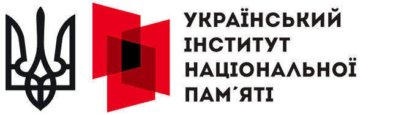
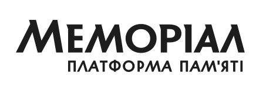

Партнери.
Культура памʼяті формується не однією організацією. Вона виникає там, де громади, медіа, бізнес, культурні й освітні інституції та небайдужі люди обʼєднують свої можливості заради гідного вшанування загиблих.
Ми співпрацюємо з партнерами у створенні меморіальних практик, інформаційних кампаній, публічних подій, досліджень та проєктів, які допомагають говорити про памʼять уважно, сучасно й без знеособлення.
-

Український інститут національної памʼяті (відкриється в новій вкладці) - Starlight Media (відкриється в новій вкладці)
- Суспільне Мовлення (відкриється в новій вкладці)
-

Платформа памʼяті Меморіал (відкриється в новій вкладці) - Національне військове меморіальне кладовище (відкриється в новій вкладці)